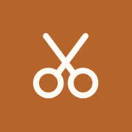

Seu rosto por todos os ângulos
Três fotos: perfil esquerdo, frente e perfil direito. A câmera guia você em cada uma.
- Luz de frenteDe preferência natural, sem sombra no rosto
- Sem boné ou óculosCabelo como você usa no dia a dia
- Use o timer nos perfisOu peça para alguém tirar com a câmera traseira

Instale o appAcesse direto da tela inicial, em tela cheia.
Que imagem você quer passar?
O estilo é escolha sua. A análise do rosto define a melhor forma de chegar nele.
Corte
Comprimento
Tempo para arrumar o cabelo
Medindo proporções do rosto…
Leva cerca de 30 segundos. Não feche o app.